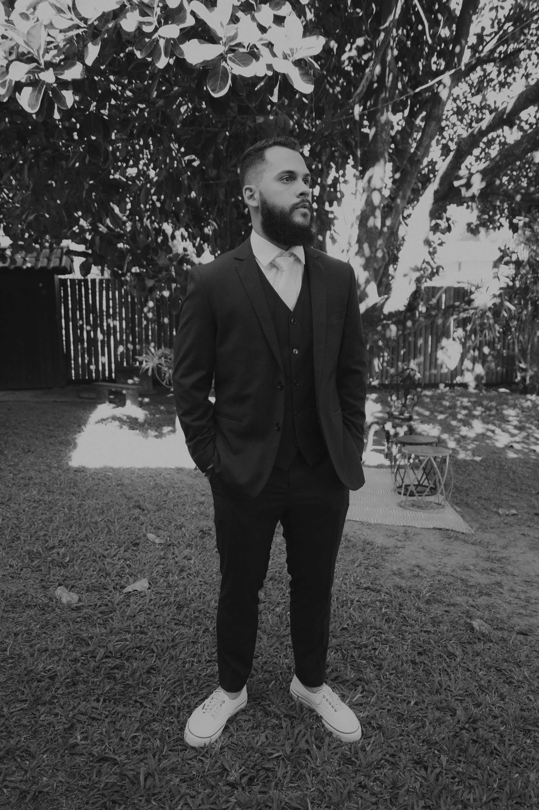

Desenvolvedor
Front-End Web
Me chamo Gabriel, tenho 24 anos e venho à 5 anos estudando e colocando em prática o Desenvolvimento Web. Acredito no poder da tecnologia para trazer experiências únicas para as pessoas.

gabrielnsardinha@gmail.com
Desenvolvedor
Front-End Web
Me chamo Gabriel, tenho 24 anos e venho à 5 anos estudando e colocando em prática o Desenvolvimento Web. Acredito no poder da tecnologia para trazer experiências únicas para as pessoas.
Nossos Serviços
Desenvolvemos Landing Pages de acordo com o seu
modelo de negócio e a sua necessidade.
Com ela, você poderá
converter
as visitas de usuários, em seus clientes.
Para interação de todos os tipos, desenvolvemos
Sites Responsivos para que nossos usuários
tenham as melhores experiências de navegação.